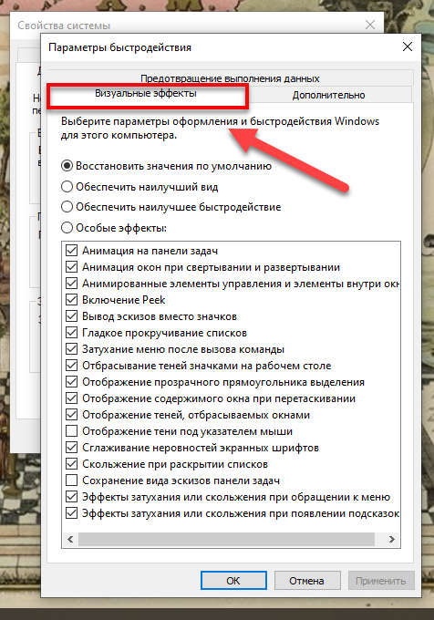
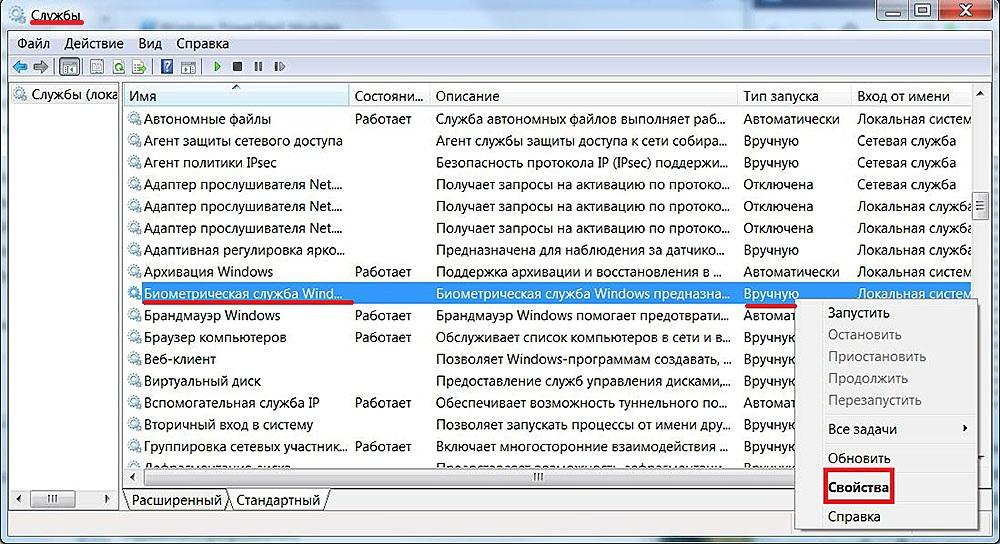

Оптимизация Windows

Автозагрузка
Заходим в автозагрузку:
Win10:
Отправляемся в диспетчер задач.Открываем раздел «Автозагрузка».Win7:
Нажмите Пуск , а в поле поиска введите msconfig.Нажмите вкладкуОбщие и убедитесь, что выбран пункт Выборочный запуск.Выберите вкладку
Автозагрузка и снимите флажки напротив всех ненужных элементов.
Win8:
клавиши Win+R и ввести в окно «Выполнить»следующее: shell:startup.
WinXP
Открываем меню «Пуск» и вводим команду Win+R, далеепрописываем в отурывшейся вкладке знакомую нам команду msconfig.
Нажимаем на Ок.
Win11
Нажмите на клавиатуре Ctrl+Shift+Escи перейдите во вкладку "Автозагрузка"
Выключаем службы, которые грузят систему «без дела»
«Пуск» правой кнопкой / «Управление компьютером» раздел «Службы».
Во вкладе «Расширенный» можно почитать, чем занимается каждая из служб.
Отключите графические спецэффекты Windows
Свойства системы/Дополнительно. Быстродействие нажмите кнопку Параметры.
откроется окно Параметры быстродействия. Выберите вкладку Визуальные эффекты во вкладках
меню сверху, если она не выбрана по умолчанию.

Отобразится список опций раздела Визуальные эффекты.
Обычно активирован флажок Восстановить значения по умолчанию.
Ниже отображается список визуальных эффектов с интуитивно понятными названиями.
Просмотрите его и снимите отметки
со всех функций, которые вы сочтете избыточными. Вы всегда сможете восстановить их позже,
если передумаете. Обратите внимание,
что при первом изменении автоматически устанавливается флажок Особые эффекты.
Это нормальная работа раздела Параметры быстродействия.
Обновляйте драйвер оборудования
Здесь вы сами знаете
Выполните очистку диска


Win10:
В поле поиска на панели задач введите очистка диска,а затем выберите пункт Очистка диска из списка результатов. Выберите диск, который требуется очистить, и нажмите кнопку ОК.
В разделе Удалить следующие файлы выберите типы файлов, которые требуется удалить.
Нажмите кнопку ОК.
Win8:
Закройте все запущенные программы.Нажмите клавиши Windows + R. В открытом поле введите cleanmgr . Щелкните ОК . В раскрывающемся списке выберите диск,
который нужно очистить, и нажмите « ОК» .
Win7:
Чтобы воспользоваться функцией очистки диска в Windows 7,войдите в «Мой компьютер», нажмите правой кнопкой на необходимый диск, выберите
пункт меню «Свойства» и нажмите кнопку «Очистка диска».
WinXP:
Кликните на диске «C» правой кнопкой мыши и выберите «Свойства».Нажмите кнопку «Очистка диска». Нажмите кнопку «Очистить системные файлы»
Очистка временных файлов
В поле поиска на панели задач введите очистка диска, а затем выберите
пункт Очистка диска из списка результатов. Выберите диск, который требуется очистить, и
нажмите кнопку ОК. В разделе Удалить следующие файлы выберите типы файлов, которые требуется удалить.
Отключение ненужных служб
Управление компьютером/Службы. В окне «Службы» открывается большой список служб компьютера с указанием их состояния,
кратким описанием и типом запуска. Для отключения службы выделяем её, и в контекстном меню столбца «Тип запуска» щёлкаем пункт
«Свойства».

В окне свойств выбранной службы, в контекстном меню «Тип запуска» выбираем «Отключена».
Оптимизация браузера

Очистите браузер от ненужных расширений

Удалите ненужные расширения. И те которые не нужны.
Очистите кеш браузера
Google Chrome собирается информация с посещенных сайтов.
По задумке это должно помочь загружать их заново с большей скоростью,
но если у вас адекватный компьютер с нормальным интернетом, эти сохраненные
данные просто не нужны. Зато они сильно тормозят работу браузера. Чтобы очистить кеш
за считанные секунды, введите в поисковой строке chrome://settings/clearBrowserData, а в появившемся меню выберите полное
удаление кеша за все время.
Настройте выгрузку вкладок из памяти
рекомендуем установить расширение The Great Suspender для этого.
Плавный скроллинг
chrome://flags/, а в верхней строке появившейся страницы напишите
#smooth-scrolling. В найденном пункте переключите Disabled на Enabled и перезагрузите браузер.
Используйте базовую тему

Ибо ваш браузер будет тормоз.
Оптимизация игр на пк

включения всех ядер при запуске пк:
Win 7 Пуск--> выполнить--> msconfig--> загрузка--> доп параметры--> число процессоров - ставим
самое максимальное число.
Отключение эффектов
Заходим в "настройки" пункт "Эффекти" ну и ставим галочку "без эффектов".
Еще в этом меню также можно поставить графику на 50, и другое.
НЕ Используйте ПРОГРАМЫ ДЛЯ ОЧИСТКИ

Очистку системы можно сделать и без всяких программ. Да и многие из
этих прог на самом деле только мусорят вашу систему.
Антивирус

раз уж мы заговорили про прог типа для "очистки системы", то
давайте поговорим про антивирусы. Я не буду говорить что это такое, уже
все давно знают, но скажу лишь одно: Антивирус это хорошо, но многие из
них ничего не делают, много жрут, грузят ваше устройство, да и еще платные.
Короче самый нормальный антивирус это ваша голова.
Вирус Майнер

Вирус-майнер — это вредоносная программа, использующая ресурсы зараженного компьютера для добычи (майнинга) криптовалюты.
Если вы все сделали, но ваше устройство все равно глючит значит кто-то майнит криптовалюты на пк, наверное вы скачали вирус
майнер.
Как удалить?
До того как начать сканирование, нужно скачать антивирус и установить его. Конечно, лучше всего иметь
уже установленный вариант. Рекомендуется использование решений от компании ESET.